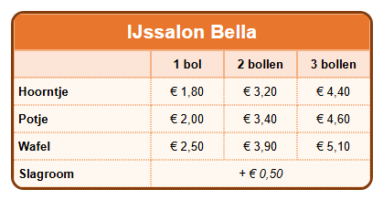

Leerpad › Les 4
Randen en afgeronde hoeken
Doel: de rand van de tabel en van de cellen kiezen: kleur, dikte, stijl en
afgeronde hoeken. Zo krijgt je tabel een eigen stijl.

Twee soorten randen
- De rand rond de hele tabel stel je in op het tabblad
 Tabel (T): Randkleur tabel,
Randdikte tabel, Randstijl tabel en Randafronding tabel (hoe groter het getal, hoe ronder de hoeken).
Tabel (T): Randkleur tabel,
Randdikte tabel, Randstijl tabel en Randafronding tabel (hoe groter het getal, hoe ronder de hoeken). - De lijnen tussen de cellen: hun dikte kies je met Lijndikte raster (tabblad Tabel). De stijl kies je per cel
met Celrandstijl op het tabblad
 Cel (C):
geen, doorgetrokken, streepjes, puntjes of dubbel.
Cel (C):
geen, doorgetrokken, streepjes, puntjes of dubbel.
Goed om te weten: de rand rond de tabel en de afgeronde hoeken zie je het best in de
test-browser. Klik onderaan op Klik hier voor extra functies en daarna op Open test-browser.
Zo maak je het zelf
- Maak een tabel van 4 kolommen en 6 rijen. Voeg de cellen van de bovenste rij samen (zie les 3) en typ de naam van de ijssalon.
- Vul de soorten (hoorntje, potje, wafel) en de prijzen in, en maak de kop op zoals in les 2.
- Kies op het tabblad Tabel bij Randkleur tabel donkerbruin en zet Randdikte tabel op 3.
- Zet Randafronding tabel op 14: de hoeken van de tabel worden rond.
- Selecteer de cellen met de soorten en prijzen (sleep erover) en kies op het tabblad Cel bij Celrandstijl puntjes.
- Bekijk het resultaat in de test-browser.
Een rand die past
Een rand helpt om de tabel te lezen, maar te veel lijnen maken ze druk. Gebruik een dikke rand rond de tabel en dunne of lichte lijnen binnenin. Kies een randkleur die past bij de kleur van de kop.
Opdracht
Geef de tabel een dubbele rand in plaats van een doorgetrokken rand. Zet daarna Hoekafronding cellen op 6 en kijk in de test-browser wat er verandert.
Oplossing
Kies op het tabblad Tabel bij Randstijl tabel dubbel. Een dubbele rand heeft wat dikte nodig: laat Randdikte tabel op 3 of meer staan. Met Hoekafronding cellen krijgt elke cel apart ronde hoeken, zodat de cellen er als knopjes uitzien.
Werk je onder Linux? Open het voorbeeld dan zelf met Openen tabel designer: map
lessen, bestand les04-prijslijst.htd.